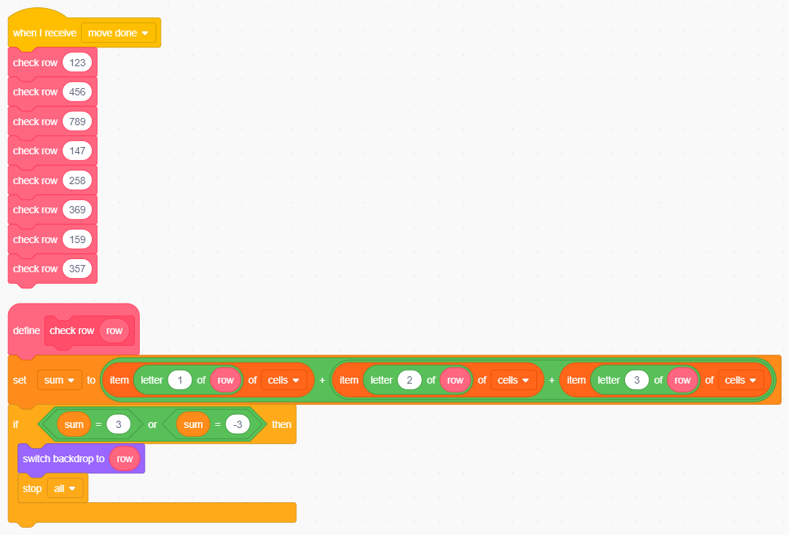
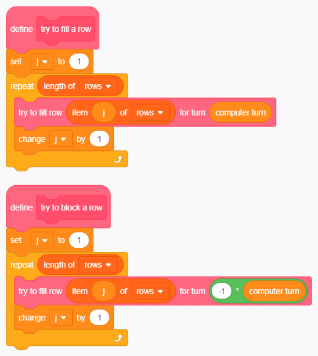

risorse | ia in scratch - tria
Spesso i partecipanti più assidui agli incontri di CoderDojoFVG chiedono di affrontare progetti un po' più ambiziosi di quelli che presentiamo quando la maggior parte dei presenti ha poca o nessuna esperienza di Scratch. Considerato inoltre che ultimamente si sente molto spesso parlare di intelligenza artificiale, ho cercato di coniugare le due cose: preparare un progetto più complesso del solito che permetta di introdurre alcuni concetti dell'AI.
L'obiettivo è costruire un programma che giochi a tria dimostrando un certo livello di intelligenza. Sarà anche dotato di una minima capacità d'apprendimento, sufficiente per fornire alcuni spunti di discussione sul tema.
Il programma è sviluppato per passi:
Le ultime due fasi sono le più interessanti. Delle due, la prima introduce una lista che contiene le caselle in ordine di rilevanza strategica; quando muove Scratch sceglie la prima casella in elenco che non è ancora occupata. Nella seconda, al termine di una partita vittoriosa Scratch sposta le caselle giocate verso l'inizio dell'elenco per aumentare la probabilità di giocarle nelle partite successive; in caso di sconfitta le sposta verso il fondo per limitare il loro utilizzo.
L'idea non è originale, è il progetto TICTAC pubblicato nel libro “Il BASIC per l'intelligenza artificiale” di Tim Hartnell edito da Edizioni Elettroniche Mondadori nel 1985. A suo tempo realizzai una versione per ZX Spectrum 48K.
Partiamo da un progetto vuoto. Trasformiamo Sprite1 nella prima cella in alto a sinistra rinominandolo in Cell1. Aggiungiamo i costumi Block-o e Block-x. Eliminiamo i due costumi originali e creiamo un terzo, che chiamiamo blank e che contiene un quadrato bianco di dimensioni paragonabili a quello degli altri due costumi. Poniamo il nuovo costume, che rappresenta la cella vuota, tra la O e la X:
I costumi della cella. L'ordine dei costumi è significativo!
Spostiamo lo sprite in posizione (-100, 100) col costume blank (la cella inizialmente è vuota!):
Il codice di inizializzazione della prima cella.
Quando il giocatore fa click su una cella vuota questa deve assumere una delle due forme O/X, ma quale? Serve uno sprite che gestisca la logica del turno alternando i due simboli tra una mossa e l'altra. Possiamo sfruttare questo sprite per mostrare qual'è il simbolo corrente. Per questa ragione cloniamo lo sprite Cell1 in Turn, riduciamo le sue dimensioni del 50% posizioniamolo in alto a destra in posizione (210, 150).
Creiamo una nuova variabile turn che rappresenta il turno corrente secondo la codifica -1=O, +1=X (scelta arbitraria che ci consentirà di semplificare il codice riducendo il numero di if complessivi). Aggiungiamo nel codice l'inizializzazione casuale della variabile appena creata e carichiamo il costume associato al simbolo estratto:
Il codice iniziale dello sprite Turn. Notare l'istruzione per il caricamento del costume.
Avviamo ripetutamente il gioco verifichiamo che di tanto in tanto il turno cambia.
Quando clicchiamo una cella vuota questa deve assumere il simbolo del turno. Per far ciò è sufficiente un blocco when this sprite clicked e la stessa istruzione che abbiamo usato per aggiornare il costume di Turn.
Quando proviamo a cliccare Cell1 per verificare il buon funzionamento del codice ci accorgiamo che è difficile individuare l'area occupata dallo sprite, perché è di fatto invisibile. Disegnamo allora la classica griglia sul backdrop1, e già che ci siamo lo rinominamo in frame:
Il campo di gioco.
Ora è molto più facile inquadrare Cell1! Dopo che un giocatore ha effettuato la sua mossa il turno deve cambiare, e per questa ragione la cella emette il messaggio move done per indicare che la mossa si è conclusa:
Invio della notifica di mossa avvenuta.
Turn sfrutta questo messaggio per cambiare il turno:
Cambio turno in seguito ad una mossa.
Piccolo inconveniente: il codice permette di rigiocare una cella già occupata: provate a cliccare il simbolo che appare nell'unica cella del gioco: il nuovo simbolo sostituisce quello vecchio. La mossa allora va accettata solo se la cella è vuota:
Il frammento di codice di Cell1 per impedire che una cella possa essere rigiocata.
Siamo pronti per creare le rimanenti 8 celle: si cloni Cell1 e si posizionino i nuovi sprite rispettivamente in (0, 100), (100, 100), (-100, 0), (0, 0), (100, 0), (-100, -100), (0, -100) e (100, -100). Lo schema finale deve risultare:
1 | 2 | 3
---+---+---
4 | 5 | 6
---+---+---
7 | 8 | 9
A questo punto il programma è già utilizzabile da due giocatori umani. Il progetto è scaricabile qui.
Quandoi un giocatore fa tria il programma dovrebbe evidenziarla e impedire ulteriori mosse. Il primo aspetto può essere gestito modificando opportunamente lo sfondo; per questa ragione attribuiamo a questo oggetto la responsabilità di determinare la fine della partita, anche in caso di parità.
Come può lo sfondo analizzare lo stato della griglia? Una soluzione è introdurre una variabile lista di 9 elementi, in cui ogni elemento rappresenta lo stato di una cella: -1=O, 0=cella vuota, +1=X. Individuate le celle che possono dare origine a una tria è sufficiente sommare i relativi elementi della lista: se la somma risultante è +3 o -3 allora c'è una tria, se no, no. Quando lo sfondo individua una tria cambia il proprio costume con quello predisposto per evidenziare le caselle che hanno originato la tria. Le possibili trie sono otto: tre orizzontali (caselle 123, 456, 789), tre verticali (147, 258, 369), due diagonali (159 e 357). Prepariamo allora otto sfondi il cui nome corrisponda alla terna di celle che mettono in evidenza:
Lo sfondo che evidenzia la tria realizzata sulla prima riga.
Creiamo la variabile lista globale cells che inizializziamo con 9 zeri. Per comodità lo facciamo nel codice di Turn che già si occupa di inizializzare la variabile turn:
All'avvio del programma ogni elemento della lista viene azzerato.
Quando una cella viene selezionata, questa deve aggiornare l'elemento della lista ad essa associato:
Il frammento di codice di Cell1.
Per Cell2 l'elemento della lista da rimpiazzare è il secondo, per Cell3 il terzo, ... e così via. Cliccare in sequenza le celle e verificare che gli elementi della lista cells vengono aggiornati di conseguenza, dopodiché si può nascondere la variabile.
Torniamo allo sfondo. Poiché il controllo di fine partita va fatto dopo ogni mossa, agganciamoci al messaggio move done e prepariamoci a controllare lo stato delle 8 terne di celle sulle quali si può produrre una tria. Il controllo da eseguire è sempre lo stesso, quindi predisponiamo un nuovo blocco che riceve una terna di celle e verifica se contengono tutte lo stesso simbolo; se così è carica lo sfondo associato alla terna:
La selezione dello sfondo giusto dipende dalla tria.
Soffermiamoci un attimo sulla procedura check row: essa riceve una sequenza di tre caratteri; gli indici delle singole celle vengono estratti mediante il blocco letter () of (); questi indici vengono utilizzati per ricavare il valore dell'elemento che ricopre quella esatta posizione nella lista cells. I valori associati alle tre celle della riga vengono sommati tra loro; se il risultato è ±3 allora la riga passata contiene tre simboli uguali, quindi le tre celle costituiscono una tria: viene caricato lo sfondo che la evidenzia e il programma viene arrestato.
Quando si completa una tria e lo sfondo carica un nuovo costume, questo rimane in uso anche nella partita successiva. Il problema si risolve caricando la griglia iniziale all'avvio della partita. In secondo luogo la sequenza di chiamate check row può essere sostituita da un ciclo se si ha l'accortezza di memorizzare le otto terne in una variabile globale dedicata denominata rows:
Il caricamento dello sfondo iniziale, il ciclo sulle terne della lista rows.
Sempre per coerenza, dell'inizializzazione della lista rows se ne occupa lo sprite Turn:
Inizializzazione della lista rows.
Infine, a partita ultimata i giocatori possono continuare a selezionare le celle rimaste vuote. Questo problema si risolve introducendo una nuova variabile globale, is game running, inizializzata a 1 da Turn e portato a 0 dallo sfondo al termine della partita. Ogni cella verifica lo stato di questa variabile prima di accettare la mossa:
Le mosse sono accettate solo se la variabile is game running vale 1.
Apportiamo ancora un paio di modifiche. La prima riguarda il messaggio move done che lo sfondo usa per avviare la procedura di controllo di fine partita e Turn per cambiare il turno. A rigor di logica, quando la partita termina non è necessario il cambio turno. Conviene mettere in sequenza le due operazioni introducendo un nuovo messaggio, next turn che lo sfondo emette solo se è effettivamente il caso di proseguire nella partita, ed è su questo messaggio che Turn si pone in ascolto. Per far ciò lo sfondo deve anche controllare che non si sia giunti ad una patta. Questa condizione è facile da verificare: se non ci sono più caselle libere e non c'è stata alcuna tria allora la partita è terminata in parità. Per distinguere i due casi sono stati introdotti due nuovi blocchi nel codice dello sfondo, stop on three-in-a-row e stop on draw:
Inizializzazione del flag “partita in corso” a cura dello sprite Turn.
Il codice aggiuntivo per la gestione completa del fine partita nello sfondo.
Il progetto è scaricabile qui.
Arbitrariamente attribuiamo il segno O (-1) al computer, X (+1) all'utente. Lo facciamo attraverso una variabile globale, computer turn cosicché se in futuro dovessimo cambiare idea basterà intervenire in un unico punto. Turn, dopo aver impostato il turno, invia il messaggio computer moves al nuovo sprite Laptop a indicare che tocca al computer muovere:
Il codice di Turn che determina quando la mossa tocca al computer.
La variabile globale candidate cell contiene l'indice della casella che Scratch ha deciso di giocare. Laptop la valorizza con un numero a caso tra 1 e 9, ripetendo l'estrazione fino a quando la scelta non ricade su una cella libera. A quel punto emette il messaggio pick candidate cell per occupare la casella prescelta:
Il codice dello sprite Laptop.
Ora è necessario intervenire nel codice di ogni singola cella per cambiarne il costume alla ricezione del messaggio pick candidate cell se l'indice della cella corrisponde al valore contenuto nella variabile:
La risposta di Cell1 al messaggio pick candidate cell. Notare la somiglianza dei due blocchi.
Il codice che si occupa della mossa del computer è identico a quello della selezione della cella da parte del giocatore. Poiché la duplicazione del codice può essere fonte di problemi, impariamo ad eliminarla:
Codice equivalente, privo però di ripetizioni.
Le stesse identiche modifiche vanno apportate a tutte le altre celle, badando a modificare coerentemente con l'indice della cella i tre riferimenti alla posizione occupata dalla cella stessa.
Fin dalle prime partite ci si rende conto che la strategia casuale non è vincente. Anche se a volte Scratch ci sorprenderà, sappiamo perfettamente che anche le mosse più indovinate sono frutto del caso. È lecito parlare di intelligenza in questi casi?
Il progetto è scaricabile qui.
Con un piccolo intervento al codice di Turn è possibile far giocare Scratch contro sè stesso:
Scratch sfida sè stesso!
Rendiamo la strategia del computer più competitiva (intelligente?!) controllando, prima di effettuare la mossa casuale, se c'è una tria da completare. Bisogna dunque verificare, per ogni possibile tria, se una delle tre posizioni è libera e le rimanenti due sono occupate dal simbolo O. La condizione è equivalente a chiedersi se la somma delle celle è uguale a -2, avendo attribuito al simbolo O il valore -1:
0 + (-1) + (-1) = -2.
Il codice dello sprite Laptop necessita di vari interventi. Spostiamo innanzitutto i blocchi che realizzano la strategia casuale in una procedura dedicata:
Il frammento di codice della mossa casuale.
Creiamo il nuovo blocco try to fill a row e il codice che esegue la mossa del computer diventa:
La strategia completa adottata dal computer.
Sfruttiamo la variabile candidate cell per determinare se il nuovo blocco ha trovato una posizione che permetta di completare una tria. Inizialmente la poniamo a zero a significare “Scratch non ha ancora deciso dove muovere”. Se dopo l'esecuzione del blocco try to fill a row la variabile è ancora nulla allora possiamo concludere che non c'è una tria da chiudere e proseguiamo con la giocata casuale.
Compito di try to fill a row è trovare una tria da completare. Il processo si suddivide in tre fasi:
La scansione delle terne è identica a quella costruita per la determinazione del fine partita, con l'accortezza di usare una variabile indice privata j diversa da quella usata nello sfondo:
Il ciclo che analizza tutte le possibili trie.
Il blocco try to fill row verifica che si tratti a tutti gli effetti di una candidata tria; se così è inoltra gli indici delle celle che costituiscono la potenziale tria al blocco pick empty cell che individua quella vuota e la seleziona come cella da giocare:
Il blocco che verifica la presenza di una potenziale tria.
Selezione della (prima) cella vuota.
Il codice ottenuto non è ottimale: la scansione delle terne potrebbe interrompersi nel momento in cui viene individuata la prima tria. Dato il ridotto numero di terne da controllare, si è preferito puntare sulla leggibilità del codice piuttosto che sulla sua efficienza.
Il programma ora dimostra di conoscere le regole del gioco: quando può, non perde occasione per fare tria.
Il progetto è scaricabile qui.
Lo stesso codice che viene usato per cercare una potenziale tria da chiudere può essere riutilizzato per scovare una possibile tria dell'avversario, così da bloccarla: è infatti sufficiente confrontare la somma delle tre celle con +2 anziché -2. La strategia del computer diventa in questo modo più raffinata:
La versione aggiornata della strategia del computer.
Il blocco try to fill row ora riceve un nuovo parametro in ingresso, turn, che rappresenta il simbolo per il quale si vuole effettuare la ricerca: se vale -1 il blocco cercherà le candidate trie di tipo O, se vale -1 si concentrerà su quelle di tipo X.
La ricerca della tria da completare generalizzata.
Grazie a questa lieve modifica i blocchi per la ricerca del completamento della propria tria e quello del blocco della tria dell'avversario diventano praticamente identici, essendo il simbolo che viene passato al blocco try to fill row l'unico dettaglio diverso: il blocco try to fill a row passerà il valore assunto della variabile turn che, nell'istante in cui viene eseguito il blocco, contiene il valore associato al simbolo con cui gioca Scratch; il blocco try to block a row passerà invece il valore associato al simbolo dell'avversario, che è l'opposto di quello del computer, cioé -1 * turn:
I blocchi per il completamento e il blocco della tria sono simili.
Il programma diventa sempre più raffinato, e batterlo non è così scontato.
Il progetto è scaricabile qui.
È giunta l'ora di abbandonare la strategia casuale. Dotiamo Scratch di una base di conoscenza dalla quale possa attingere quando deve scegliere la prossima casella da giocare e non ci sono trie da completare o da bloccare. Nonostante i termini altisonanti l'implementazione è banale: definiamo un elenco di mosse ordinate per importanza, e facciamo in modo che Scratch giochi la prima che risulta libera. Abbiamo quindi bisogno di una nuova variabile lista privata dello sprite Laptop, che denominiamo best moves, e che inizializziamo con la sequenza 5, 1, 3, 7, 9, 2, 4, 6, 8 che privilegia la casella centrale e quelle d'angolo:
L'elenco delle possibili mosse, ordinate per rilevanza strategica.
Il codice di inizializzazione dell'elenco delle mosse migliori non fa capo a nessun blocco pre-esistente perché è relativo a un oggetto immutabile che per tale ragione non ha bisogno di essere ricreato ad ogni nuova partita. Cliccare sul primo blocco per inizializzare l'elenco una volta per tutte.
Va ora definito un nuovo blocco, che chiameremo pick best cell, alternativo a pick a random cell (che comunque conserviamo perché potrebbe tornare utile più tardi). Cominciamo col sostituirlo al secondo nel frammento di codice che risponde al messaggio computer moves:
Sostituzione della strategia di selezione della mossa successiva.
La definizione del nuovo blocco è la seguente:
Selezione della prima mossa migliore giocabile.
Il blocco usa la variabile privata j per effettuare una scansione dell'elenco best moves. L'indice viene incrementato ciclicamente fino a quando non si trova una casella che risulta libera, ovvero quando il valore associato alla cella nell'elenco cells è pari a zero. Questa viene immediatamente eletta come mossa migliore e viene posta nella variabile candidate cell per concludere il turno.
Il progetto è scaricabile qui.
La configurazione delle best moves rende Scratch praticamente imbattibile, specie se è lui a iniziare il gioco. Scompigliamo allora l'ordine delle mosse migliori in modo da ottenere la sequenza intuitivamente non ottimale 2, 4, 6, 8, 1, 3, 7, 9, 5 (click sul primo blocco per aggiornare l'elenco). Bastano poche partite per rendersi conto che questa serie è molto meno efficace di quella originale. Esiste un modo perché Scratch passi progressivamente da una all'altra autonomamente mentre gioca? È quello che stiamo per scoprire…
Ricordiamo quanto anticipato all'inizio: al termine della partita, se Scratch ha vinto sposta le caselle che ha giocato di una posizione verso l'inizio dell'elenco best moves, in caso di sconfitta di un posto verso il fondo. Se la partita è finita in parità, lascia inalterato l'elenco delle mosse migliori.
Introduciamo una nuova variabile, winner, che fornisce l'identità del vincitore: -1 per O, +1 per X, 0 in caso di parità. Attribuiamo questa responsabilità allo sfondo, visto che già si occupa di determinare quando la partita è giunta al termine:
Inizializzazione della variabile winner.
Per dare la possibilità a Laptop di aggiornare la sua base di conoscenza, al termine della partita lo sfondo, dopo aver impostato la variabile winner, emette una notifica di fine partita:
Determinazione del vincitore: l'ultimo che ha mosso.
Per coerenza conviene emettere la notifica di fine partita anche in caso di parità:
Emissione della notifica di fine partita in caso di patta.
Tocca a Laptop aggiornare l'elenco delle mosse migliori in caso di vittoria o sconfitta. Poiché abbiamo stabilito nel codice dello sprite Turn che il computer gioca con le X, la vittoria del computer si ha quando winner è uguale a computer turn (il simbolo assegnato al computer), la sconfitta quando winner è il simbolo opposto. Se winner è zero la partita è finita in parità e si è deciso di non modificare l'elenco delle mosse migliori.
Per far risalire le posizioni giocate si effettua una scansione a partire dalla seconda posizione (la mossa in prima posizione non può avanzare ulteriormente!) e, se la casella contiene il simbolo assegnato al computer allora questa viene scambiata con quella che la precede con la nota tecnica della variabile ausiliaria:

Aggiornamento della base di conoscenza in caso di vittoria.
Per verificare il corretto funzionamento dell'algoritmo, lasciare che sia Scratch ad iniziare la partita — giocherà la casella 2 —, quindi rispondiamo con 6. Scratch giocherà 4 e noi rispondiamo con 8. Scratch giocherà 1, noi rispondiamo 5 per consentirgli di chiudere la tria in 7. In seguito a questa vittoria l'elenco delle mosse migliori diventa:
In caso di vittoria le caselle giocate si spostano verso l'inizio.
In caso di sconfitta Scratch deve spostare le celle giocate verso la fine dell'elenco. L'algoritmo da applicare è simile al precedente, ma serve un'accortezza: la scansione dev'essere effettuata all'indietro, a partire dal fondo dell'elenco, altrimenti la prima cella giocata viene trascinata, passo dopo passo, in fondo all'elenco, e questo non va bene. Ecco quindi il codice corretto:
Aggiornamento della base di conoscenza in caso di vittoria.
Anche in questo caso una verifica è d'obbligo: ristabiliamo l'ordine originale dell'elenco delle mosse migliori, dopodiché lasciamo la prima mossa a Scratch, che giocherà in 2, e rispondiamo in 1. A questo punto Scratch giocherà in 4, al che noi rispondiamo in 3. Scratch giocherà 6, e noi rispondiamo in 5. Scratch bloccherà la nostra tria giocando 7, ma noi vinciamo rispondendo 9. L'elenco delle mosse migliori viene così trasformato:
Aggiornamento della base di conoscenza in caso di sconfitta.
Il progetto finale è scaricabile qui.
Giocando contro un buon giocatore Scratch impara presto che la casella centrale è strategica. Cambiate spesso il modo di fare tria e vedrete la cella numero 5 risalire verso le prime posizioni dell'elenco. Giocando contro un giocatore scarso l'apprendimento si dimostrerà più lento e lievemente meno efficace.
Riutilizzando il blocco pick random move che ora giace inutilizzato in Laptop possiamo modificare il codice di Turn in modo da far giocare la versione intelligente di Scrach contro quella casuale. La cosa è interessante perché permette di vedere comodamente come evolve la base di conoscenza (basta un click per assistere ad un'intera partita):
Scratch sfida sè stesso – parte II.
Alcuni spunti per possibili sviluppi del programma:
Una versione del progetto contenente solo i costumi della cella e gli sfondi è scaricabile qui.
Pagina modificata il 24/04/2021